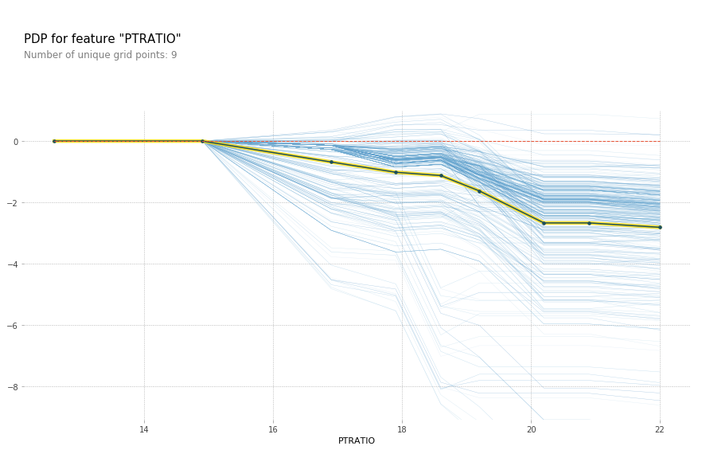
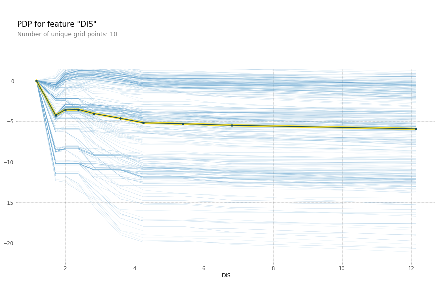
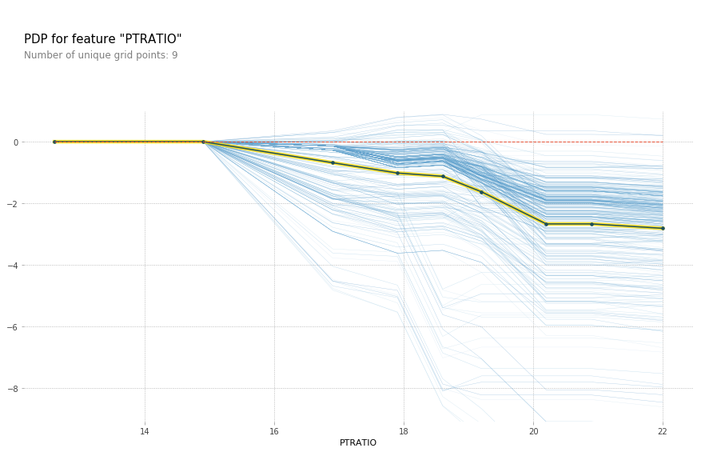
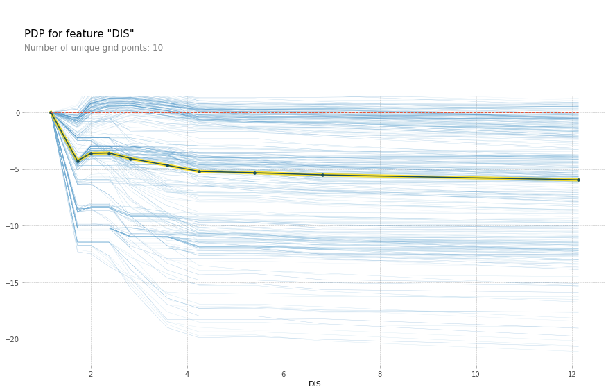

import numpy as np
import matplotlib.pyplot as plt
import pandas as pd
%matplotlib inline
plt.rcParams["savefig.dpi"] = 300
plt.rcParams["savefig.bbox"] = 'tight'
import warnings
from sklearn.exceptions import ConvergenceWarning
warnings.simplefilter('ignore', (FutureWarning, ConvergenceWarning))
Feature importances and Model interpretation¶
Model Interpretation and Feature Selection¶
03/04/20
Andreas C. Müller
Alright, everybody. Today we will talk about Feature selection and model interpretation, look at how to do this in general, and how to doit with scikit-learn. We’re also going to look into a couple of other Python libraries that help doing these two things.
FIXME motivation for model interpretation! FIXME random forest code is confusing because I tried to simplify it. Also: we haven’t seen those yet?!
FIXME use / explain permutation importance
FIXME use seaborn clustermap for correlation matrix plot
FIXME add diagram for permutation importance FIXME explain when and how to interpret coeffients FIXME mutual information needs better explanation FIXME lasso show random between correlated, same for tree, compare to RF FIXME IceBOX example with cross? FIXME should be two lectures really! FIXME maybe drop shap and shaply FIXME better explanation for ice-box and partial dependence FIXME partial dependence definitely needs a process diagram FIXME remove boston FIXME icebox do real simpsons paradox example FIXME unsupervised feature selection terrible? FIXME why is shap in the wrong direction? Why spurious importances?
Model Interpretation (post-hoc)?¶
Not inference!¶
Not causality!¶
still useful(?)¶
Possibly useful for feature selection, feature engineering, model debugging, explaining predictions. Alternatively: use model that are easy to interpret! OR: derive a simpler explainable model from a non-explainable one (model compression)
Caveat: if your model is bad, interpreting it makes no sense!
Types of explanations¶
##Explain model globally
How does the output depend on the input?
Often: some form of marginals
Explain model locally¶
Why did it classify this point this way?
Explanation could look like a “global” one but be different for each point.
“What is the minimum change to classify it differently?”
Marginals: how does the prediction change as function of a particular Features?
Explaning the model \(\neq\) explaining the data¶
model inspection only tells you about the model
the model might not accurately reflect the data
“Features important to the model”?¶
Naive:
coef_for linear models (abs value or norm for multi-class)feature_importances_for tree-based models
Use with care!
Linear Model coefficients¶
Relative importance only meaningful after scaling
Correlation among features might make coefficients completely uninterpretable
L1 regularization will pick one at random from a correlated group
Any penalty will invalidate usual interpretation of linear coefficients
Drop Feature Importance¶
.smallest[
def drop_feature_importance(est, X, y):
base_score = np.mean(cross_val_score(est, X, y))
scores = []
for feature in range(X.shape[1]):
mask = np.ones(X.shape[1], 'bool')
mask[feature] = False
X_new = X[:, mask]
this_score = np.mean(cross_val_score(est, X_new, y))
scores.append(base_score - this_score)
return np.array(scores)
```]
.smallest[
- Doesn't really explain model (refits for each feature)
- Can't deal with correlated features well
- Very slow
- Can be used for feature selection
]
on it's own not very useful, we'll see it later
rebuilds many models, not explaining this particular model!
+++
## Permutation importance
Idea: measure marginal influence of one feature
$$I_i^\text{perm} = \text{Acc}(f, X, y) - \mathbb{E}_{x_i}\left[\text{Acc}(f(x_i, X_{-i}), y)\right]$$
```python
def permutation_importance(est, X, y, n_repeat=100):
baseline_score = estimator.score(X, y)
for f_idx in range(X.shape[1]):
for repeat in range(n_repeat):
X_new = X.copy()
X_new[:, f_idx] = np.random.shuffle(X[:, f_idx])
feature_score = estimator.score(X_new, y)
scores[f_idx, repeat] = baseline_score - feature_score
–
Applied on validation set given trained estimator.
Also kinda slow.
LIME¶
.smaller[
Build sparse linear local model around each data point.
Explain prediction for each point locally.
Paper: “Why Should I Trust You?” Explaining the Predictions of Any Classifier
Implementation: ELI5, https://github.com/marcotcr/lime ]
.center[
 ]
]
SHAP¶
Build around idea of Shaply values
very roughly: does drop-out importance for every subset of features
intractable, sampling approximations exists
fast variants for linear and tree-based models
awesome vis and tools: https://github.com/slundberg/shap
allows local / per sample explanations
Case Study¶


Models on lots of data¶
.smallest[
lasso = LassoCV().fit(X_train, y_train)
lasso.score(X_test, y_test)
0.545
ridge = RidgeCV().fit(X_train, y_train)
ridge.score(X_test, y_test)
0.545
lr = LinearRegression().fit(X_train, y_train)
lr.score(X_test, y_test)
0.545
param_grid = {'max_leaf_nodes': range(5, 40, 5)}
grid = GridSearchCV(DecisionTreeRegressor(), param_grid, cv=10, n_jobs=3)
grid.fit(X_train, y_train)
grid.score(X_test, y_test)
0.545
rf = RandomForestRegressor(min_samples_leaf=5).fit(X_train, y_train)
rf.score(X_test, y_test)
0.542 ]
Coefficients and default feature importance¶

tree and RF have no directionality in importances
lasso (and to some degree tree) selected randomly among correlated
RF assigns high importance to random features
Permutation Importances¶
.center[
 ]
]
SHAP values¶
.center[
 ]
]
More model inspection¶
Partial Dependence Plots¶
Marginal dependence of prediction on one (or two features)
Idea: Get marginal predictions given feature.
How? “integrate out” other features using validation data
Fast methods available for tree-based models (doesn’t require validation data)
Nonsensical for linear models.
Partial Dependence¶
.tiny[
from sklearn.inspection import plot_partial_dependence
boston = load_boston()
X_train, X_test, y_train, y_test = train_test_split(boston.data, boston.target,random_state=0)
gbrt = GradientBoostingRegressor().fit(X_train, y_train)
fig, axs = plot_partial_dependence(gbrt, X_train, np.argsort(gbrt.feature_importances_)[-6:], feature_names=boston.feature_names)
]
–
.center[
 ]
]
But there’s also something else that’s quite interesting, which is called Partial Dependence Plots that’s actually possible for all trees. Unfortunately, in scikit-learn, it’s available only for the gradient boosting. So the idea here is to not only see what parameters are important but how will they influence the target. And so after you fit your model, I’m using the Boston data set to the gradient boosting regressor, there’s a thing called plot partial dependence, which gets the model and the training data set and then the features for which I want to make the partial dependence plots.
So here, I’m looking at the six most important features. The feature importance is important according to the trees. So I sort this and take the six most important ones.
And so this is what the partner dependence plots look like. So this is the most important feature, the second most important feature and so on. This is sort of the marginal contribution of each feature. Basically, in each tree, you’re summing out the contribution of all the other features, and you look only at what is the contribution of this particular feature. In general, this would be hard to compute. For tree-based models you can compute is a very efficient way because you can basically just sum up over the whole space by traversing the tree.
Here with increased room size, the price increases and you can see how it increases and you can see that there’s like a big step function here. And you can see that for increased LSTAT, the price decreases. For the others, there aren’t any drastic effect. There seems to be some threshold for NOX. And something funky going on DIS.
The question is, so I said for random forest, you can’t find out the direction of which way the feature influences. But that was for the feature importance. So the feature importance tells the impurity decrease. So here I also look at the feature importance and they’re just numbers so they don’t give you the direction. For both gradient boosting and random forest, you can look at partial dependency plot, and they will give you a non-parametric model of how a single feature influences it. Unfortunately, it’s not available in scikit-learn. You could do the same thing for random forests. Because in the end, the way they predict is quite similar.
Bivariate Partial Dependence Plots¶
.smaller[
plot_partial_dependence(
gbrt, X_train, [np.argsort(gbrt.feature_importances_)[-2:]],
feature_names=boston.feature_names, n_jobs=3, grid_resolution=50)
]
.center[
 ]
]
You can also do this in bivariate. So here, looking at the two most important features in a bivariate plot, I’m actually not giving it a list of features, but I’m giving it a list of list of features. And so the two most important features, LSTAT, and ROOM.
You can see there’s no very complex interaction. As you can see, the effect of these two features taking into account all the other features.
This is something you can usually do for linear model easily. If you do this for the linear model, you would have lines everywhere but for more complicated models this is very hard to do. Way more tricky to do in neural networks.
Partial Dependence for Classification¶
.tiny-code[
from sklearn.inspection import plot_partial_dependence
for i in range(3):
fig, axs = plot_partial_dependence(gbrt, X_train, range(4), n_cols=4,
feature_names=iris.feature_names, grid_resolution=50, label=i)
]
.center[
 ]
]
We can do the same for classification. Here is a partial dependency plot for the iris dataset.
As I said, for classification we’re usually using One Versus Rest. So here, we have three classifiers.
One classifier for sertosa, one for Versicolor and one for virginica.
You can see that for the first two features they’re like flat. But for sertosa the decision function is high for small part petal length, medium peddling for versicolor and large for virginca. These are all put through logistic function and then normalized.
PDP Caveats¶
.left-column[
 ]¶
]¶
.right-column[
 ]
]
Ice Box¶
.smaller[
like partial dependence plots, without the
.mean(axis=0)]
.center[
 ]
.tiny[
]
.tiny[
https://pdpbox.readthedocs.io/en/latest/
https://github.com/AustinRochford/PyCEbox
https://github.com/scikit-learn/scikit-learn/pull/16164 ]
# generate data from original 2d linear model
from sklearn.preprocessing import scale
# 35 13 50?
rng = np.random.RandomState(13)
n_samples = 100000
n_informative = 2
n_correlated_per_inf = 2
n_noise = 4
noise_std = .0001
noise_correlated_std = .51
noise_y = .3
X_original = rng.uniform(-1, 1, size=(n_samples, n_informative))
#coef = rng.normal(size=n_informative)
coef = np.array([-3.2, 1.4])
y = np.dot(X_original, coef) + rng.normal(scale=noise_y, size=n_samples)
correlated_transform = np.zeros((n_correlated_per_inf * n_informative, n_informative))
for i in range(n_informative):
correlated_transform[i * n_correlated_per_inf: (i + 1) * n_correlated_per_inf, i] = rng.normal(size=n_correlated_per_inf)
X_original += rng.normal(scale=np.array([1, 1]) * noise_correlated_std, size=X_original.shape)
X_correlated = np.dot(X_original, correlated_transform.T)
X = np.hstack([X_correlated, np.zeros((n_samples, n_noise))])
X += rng.normal(scale=noise_std, size=X.shape)
X = scale(X)
X.shape
(100000, 8)
plt.imshow(np.cov(X, rowvar=False), cmap='bwr_r')
plt.title("Synthetic data Covariance")
plt.xlabel("feature index")
plt.ylabel("feature index")
plt.colorbar()
plt.savefig("images/covariance.png")

fig, axes = plt.subplots(2, 4, figsize=(16, 8))
for i, ax in enumerate(axes.ravel()):
ax.plot(X[::10, i], y[::10], '.', alpha=.1)
ax.set_xlabel("feature {}".format(i))
ax.set_ylabel("target y")
plt.savefig("images/toy_data_scatter.png")

from sklearn.model_selection import train_test_split
X_train, X_test, y_train, y_test = train_test_split(X, y, random_state=0)
from sklearn.linear_model import LassoCV, RidgeCV, LinearRegression
for i in range(X.shape[1]):
lr = LinearRegression().fit(X_train[:, [i]], y_train)
print(lr.score(X_test[:, [i]], y_test))
0.4532506867871262
0.4532514261726276
0.09275569004419326
0.09275599504713594
-0.00020773972150145426
-0.00017276124646903313
-0.00018329268681771538
-0.00020494411292082404
lasso = LassoCV().fit(X_train, y_train)
lasso.score(X_test, y_test)
0.5453241219700229
ridge = RidgeCV().fit(X_train, y_train)
ridge.score(X_test, y_test)
0.5453306487434062
lr = LinearRegression().fit(X_train, y_train)
lr.score(X_test, y_test)
0.5453299378456281
from sklearn.decomposition import PCA
pca = PCA(n_components=.99).fit(X_train)
X_train_pca = pca.transform(X_train)
lr_pca = LinearRegression().fit(X_train_pca, y_train)
inverse_lr_pca_coef = pca.inverse_transform(lr_pca.coef_)
lr_pca.score(pca.transform(X_test), y_test)
0.5453305950074661
pca.n_components_
6
from sklearn.tree import DecisionTreeRegressor
from sklearn.model_selection import GridSearchCV
param_grid = {'max_leaf_nodes': range(5, 40, 5)}
grid = GridSearchCV(DecisionTreeRegressor(), param_grid, cv=10, n_jobs=3)
grid.fit(X_train, y_train)
grid.score(X_test, y_test)
0.5452326112689287
from sklearn.ensemble import RandomForestRegressor
rf = RandomForestRegressor(min_samples_leaf=5).fit(X_train, y_train)
rf.score(X_test, y_test)
0.5426645543931425
from sklearn.ensemble import ExtraTreesRegressor
et = ExtraTreesRegressor().fit(X_train, y_train)
et.score(X_test, y_test)
0.5216260871052119
def plot_importance(some_dict):
plt.figure(figsize=(10, 4))
df = pd.DataFrame(some_dict)
ax = plt.gca()
df.plot.bar(ax=ax, width=.9)
ax.set_ylim(-1.5, 1.5)
ax.set_xlim(-.5, len(df) - .5)
ax.set_xlabel("feature index")
ax.set_ylabel("importance value")
plt.vlines(np.arange(.5, len(df) -1), -1.5, 1.5, linewidth=.5)
tree = grid.best_estimator_
plot_importance({'lasso': lasso.coef_, 'ridge': ridge.coef_, 'lr': lr.coef_, 'tree': tree.feature_importances_, 'rf':rf.feature_importances_})
plt.title("Coefficients and entropy improvement on large data")
plt.savefig("images/standard_importances.png")

from sklearn.model_selection import cross_val_score
def drop_feature_importance(est, X, y):
base_score = np.mean(cross_val_score(est, X, y))
scores = []
for feature in range(X.shape[1]):
mask = np.ones(X.shape[1], 'bool')
mask[feature] = False
X_new = X[:, mask]
this_score = np.mean(cross_val_score(est, X_new, y))
scores.append(base_score - this_score)
return np.array(scores)
from sklearn.inspection import permutation_importance
perm_ridge_test = permutation_importance(ridge, X_test, y_test)['importances_mean']
perm_lasso_test = permutation_importance(lasso, X_test, y_test)['importances_mean']
perm_tree_test = permutation_importance(tree, X_test, y_test)['importances_mean']
perm_rf_test = permutation_importance(rf, X_test, y_test)['importances_mean']
perm_lr_test = permutation_importance(lr, X_test, y_test)['importances_mean']
tree = grid.best_estimator_
plot_importance({'lasso': perm_lasso_test, 'ridge': perm_ridge_test, 'lr': perm_lr_test,'tree': perm_tree_test, 'rf':perm_rf_test})
plt.title("Permutation importance on test set (large training data)")
plt.savefig("images/permutation_importance_big.png")

import shap
def shap_linear(model, X_train, X_test):
linear_explainer = shap.LinearExplainer(model, X_train)
shap_values = linear_explainer.shap_values(X_test)
s = shap_values.mean(axis=0)
s /= np.linalg.norm(s)
return s
shap_ridge = shap_linear(ridge, X_train, X_test)
shap_lasso = shap_linear(lasso, X_train, X_test)
def shap_trees(model, X_train, X_test, approximate=False, tree_limit=None):
tree_explainer = shap.TreeExplainer(model, X_train)
shap_values = tree_explainer.shap_values(X_test, approximate=approximate, tree_limit=tree_limit)
s = shap_values.mean(axis=0)
s /= np.linalg.norm(s)
return s
shap_tree = shap_trees(tree, X_train, X_test)
Passing 75000 background samples may lead to slow runtimes. Consider using shap.sample(data, 100) to create a smaller background data set. 100%|===================| 24983/25000 [09:37<00:00]
# limit trees cause I'm in a hurry
shap_forest = shap_trees(rf, X_train, X_test, approximate=True, tree_limit=None)
plot_importance({'lasso': shap_lasso, 'ridge': shap_ridge, 'tree': shap_tree, 'rf':shap_forest})
plt.title("SHAP values on test set (large training data)")
plt.savefig("images/shap_big.png")

# X_test is actually big, not small, but that would be confusing naming, right?
X_train_small, X_test_small, y_train_small, y_test_small = train_test_split(X, y, train_size=0.001, random_state=0)
X_train_small.shape
(100, 8)
lasso_small = LassoCV().fit(X_train_small, y_train_small)
lasso_small.score(X_test_small, y_test_small)
0.5361580595868876
ridge_small = RidgeCV().fit(X_train_small, y_train_small)
ridge_small.score(X_test_small, y_test_small)
0.5336853626423791
lr_small = LinearRegression().fit(X_train_small, y_train_small)
lr_small.score(X_test_small, y_test_small)
0.5262746934049003
from sklearn.decomposition import PCA
pca_small = PCA(n_components=.99).fit(X_train_small)
X_train_pca = pca_small.transform(X_train_small)
lr_pca_small = LinearRegression().fit(X_train_pca, y_train_small)
inverse_lr_pca_coef = pca.inverse_transform(lr_pca_small.coef_)
lr_pca_small.score(pca_small.transform(X_test_small), y_test_small)
0.5303117477435796
param_grid = {'max_leaf_nodes': range(2, 20)}
grid_tree_small = GridSearchCV(DecisionTreeRegressor(), param_grid, cv=10, n_jobs=3)
grid_tree_small.fit(X_train_small, y_train_small)
grid_tree_small.score(X_test_small, y_test_small)
0.34452144133533447
rf_small = RandomForestRegressor(min_samples_leaf=5).fit(X_train_small, y_train_small)
rf_small.score(X_test_small, y_test_small)
0.5053610963883473
tree_small = grid_tree_small.best_estimator_
plot_importance({'lasso': lasso_small.coef_, 'ridge': ridge_small.coef_, 'lr': lr_small.coef_, 'tree': tree_small.feature_importances_, 'rf':rf_small.feature_importances_})
plt.title("Coefficients and entropy improvement on 100 samples")
plt.savefig("images/standard_importances_small.png")
perm_ridge_test_small = permutation_importance(ridge_small, X_test_small, y_test_small).mean(axis=1)
perm_lasso_test_small = permutation_importance(lasso_small, X_test_small, y_test_small).mean(axis=1)
perm_tree_test_small = permutation_importance(tree_small, X_test_small, y_test_small).mean(axis=1)
perm_rf_test_small = permutation_importance(rf_small, X_test_small, y_test_small).mean(axis=1)
plot_importance({'lasso': perm_lasso_test_small, 'ridge': perm_ridge_test_small, 'tree': perm_tree_test_small, 'rf':perm_rf_test_small})
plt.title("Permutation importance on test set (100 training samples)")
plt.savefig("images/permutation_importance_small.png")

shap_ridge_small = shap_linear(ridge_small, X_train_small, X_test_small)
shap_lasso_small = shap_linear(lasso_small, X_train_small, X_test_small)
/home/andy/anaconda3/envs/py37/lib/python3.7/site-packages/shap/explainers/linear.py:47: UserWarning: The default value for feature_dependence has been changed to "independent"!
warnings.warn('The default value for feature_dependence has been changed to "independent"!')
shap_tree_small = shap_trees(best_tree_small, X_train_small, X_test_small)
from sklearn.tree import plot_tree
plt.figure(figsize=(10, 4))
plot_tree(grid_tree_small.best_estimator_);

dt = DecisionTreeRegressor(max_leaf_nodes=3).fit(X_train_small[:, [0, 2]], y_train_small)
dt.score(X_test_small[:, [0, 2]], y_test_small)
0.34452144133533447
best_tree = grid_tree_small.best_estimator_
drop_tree_small = drop_feature_importance(best_tree, X_train_small, y_train_small)
perm_tree_small = permutation_importance(best_tree, X_test_small, y_test_small).mean(axis=1)
plot_importance({'lasso': np.abs(lasso_small.coef_), 'ridge': np.abs(ridge_small.coef_), 'tree': grid_tree_small.best_estimator_.feature_importances_,
'perm_tree': perm_tree_small, 'drop_tree': drop_tree_small})
plt.ylabel("feature importance (abs of coef for linear models)")
plt.title("Tree model with 100 samples")
plt.savefig("images/tree_less_data_all.png")
def shap_trees(model, X_train, X_test):
tree_explainer = shap.TreeExplainer(model, X_train)
shap_values = tree_explainer.shap_values(X_test)
s = shap_values.mean(axis=0)
s /= np.linalg.norm(s)
return s
shap_tree_small = shap_trees(best_tree, X_train_small, X_test_small)
Random Forest¶
from sklearn.ensemble import RandomForestRegressor
rf = RandomForestRegressor().fit(X_train, y_train)
rf.score(X_test, y_test)
---------------------------------------------------------------------------
NameError Traceback (most recent call last)
<ipython-input-482-27dd153ccc55> in <module>()
1 from sklearn.ensemble import RandomForestRegressor
2 rf = RandomForestRegressor(n_estimators=100).fit(X_train, y_train)
----> 3 r.score(X_test, y_test)
NameError: name 'r' is not defined
plot_importance({'lasso': np.abs(lasso.coef_), 'ridge': np.abs(ridge.coef_), 'tree': grid.best_estimator_.feature_importances_, 'forest': rf.feature_importances_})
plt.ylabel("feature importance (abs of coef for linear models)")
plt.title("Tree model with 'enough' data")
plt.savefig("images/forest_enough_data.png")

rf_small = RandomForestRegressor().fit(X_train_small, y_train_small)
rf_small.score(X_test_small, y_test_small)
0.44742420319303305
plot_importance({'lasso': np.abs(lasso_small.coef_), 'ridge': np.abs(ridge_small.coef_), 'tree': grid_tree_small.best_estimator_.feature_importances_,
'perm_tree': perm_tree_small, 'drop_tree': drop_tree_small, 'forest_small': rf_small.feature_importances_})
plt.ylabel("feature importance (abs of coef for linear models)")
plt.title("Forest model with 100 samples")
plt.savefig("images/forest_less_data_all.png")

perm_forest_small = permutation_importance(rf, X_test_small, y_test_small).mean(axis=1)
shap_forest_small = shap_trees(rf, X_train_small, X_test_small)
plot_importance({'lasso': np.abs(lasso_small.coef_), 'ridge': np.abs(ridge_small.coef_), 'tree': grid_tree_small.best_estimator_.feature_importances_,
'perm_tree': perm_tree_small, 'drop_tree': drop_tree_small, 'forest_small': rf_small.feature_importances_,
'perm_forest': perm_forest_small, 'shap_forest': shap_forest_small})
plt.ylabel("feature importance (abs of coef for linear models)")
plt.title("Forest model with 100 samples")
plt.savefig("images/forest_less_data_all.png")
Partial Dependence¶
from sklearn.datasets import load_boston
from sklearn.model_selection import train_test_split
from sklearn.ensemble import GradientBoostingRegressor
boston = load_boston()
X_train, X_test, y_train, y_test = train_test_split(
boston.data, boston.target, random_state=0)
gbrt = GradientBoostingRegressor().fit(X_train, y_train)
gbrt.score(X_test, y_test)
0.8153923574592779
from sklearn.ensemble.partial_dependence import plot_partial_dependence
fig, axs = plot_partial_dependence(gbrt, X_train, np.argsort(gbrt.feature_importances_)[-6:],
feature_names=boston.feature_names,
n_jobs=3, grid_resolution=50)
plt.tight_layout()

fig, axs = plot_partial_dependence(gbrt, X_train, [np.argsort(gbrt.feature_importances_)[-2:]],
feature_names=boston.feature_names,
n_jobs=3, grid_resolution=50)

from sklearn.datasets import load_iris
from sklearn.ensemble import GradientBoostingClassifier
iris = load_iris()
X_train, X_test, y_train, y_test = train_test_split(
iris.data, iris.target, stratify=iris.target, random_state=0)
gbrt_iris = GradientBoostingClassifier().fit(X_train, y_train)
for i in range(3):
fig, axs = plot_partial_dependence(gbrt_iris, X_train, range(4), n_cols=4,
feature_names=iris.feature_names, grid_resolution=50, label=i,
figsize=(8, 2))
fig.suptitle(iris.target_names[i])
for ax in axs: ax.set_xticks(())
for ax in axs[1:]: ax.set_ylabel("")
plt.tight_layout()
gbrt_iris.score(X_test, y_test)
0.9736842105263158


ICEBox¶
from sklearn.datasets import make_blobs
X = np.random.normal(size=(2000, 3))
w = np.array([0, .5, .1])
y = np.dot(X, w) + np.random.normal(scale=0.3, size=(2000,))
mask = X[:, 0] > 0
#X[mask, 1] -= 2
y[mask] = 1 - y[mask]
plt.plot(X[:, 0], y, 'o')

plt.scatter(X[:, 1], y, alpha=.5, s=4)
plt.savefig("images/pdp_failure_data.png")

from sklearn.experimental import enable_hist_gradient_boosting
from sklearn.ensemble import HistGradientBoostingRegressor
from sklearn.inspection import plot_partial_dependence
fig, axes = plt.subplots(2, 1)
axes[0].hist(y, bins='auto')
gb = HistGradientBoostingRegressor().fit(X, y)
pdp = plot_partial_dependence(gb, X, [1], ax=axes[1])
plt.xlabel("feature")
plt.savefig("images/pdp_failure.png")

from pycebox.ice import ice, ice_plot
ice_df = ice(pd.DataFrame(X), 1, gb.predict, num_grid_points=100)
ice_plot(ice_df, frac_to_plot=1, plot_pdp=True,
c='k', alpha=0.1, linewidth=0.3)
plt.ylabel("partial dependence")
plt.xlabel("feature")
plt.savefig("images/ice_cross.png")

from pdpbox import pdp
feature_isolate = pdp.pdp_isolate(gb, pd.DataFrame(X), [0, 1, 2], 1, num_grid_points=100)
fig, axes = pdp.pdp_plot(feature_isolate, 0, plot_lines=True, frac_to_plot=1)

from pdpbox import pdp
boston = load_boston()
X_train, X_test, y_train, y_test = train_test_split(
boston.data, boston.target, random_state=0)
gbrt = GradientBoostingRegressor().fit(X_train, y_train)
gbrt.score(X_test, y_test)
---------------------------------------------------------------------------
NameError Traceback (most recent call last)
<ipython-input-89-615f9fc1033c> in <module>
1 from pdpbox import pdp
2
----> 3 boston = load_boston()
4 X_train, X_test, y_train, y_test = train_test_split(
5 boston.data, boston.target, random_state=0)
NameError: name 'load_boston' is not defined
X_train_df = pd.DataFrame(X_train, columns=boston.feature_names)
features_of_interest = boston.feature_names[np.argsort(gbrt.feature_importances_)[-6:]]
for feature in features_of_interest:
feature_isolate = pdp.pdp_isolate(gbrt, X_train_df, X_train_df.columns, feature)
fig, axes = pdp.pdp_plot(feature_isolate, feature, plot_lines=True, frac_to_plot=1)

 





feature = 'LSTAT'
feature_isolate = pdp.pdp_isolate(gbrt, X_train_df, X_train_df.columns, feature)
fig, axes = pdp.pdp_plot(feature_isolate, feature, plot_lines=True, frac_to_plot=1)
fig.savefig("images/ice_lstat.png")
# yet another library
from pycebox.ice import ice, ice_plot
fig, axes = plt.subplots(2, 3, figsize=(16, 8))
for feature, ax in zip(features_of_interest, axes.ravel()):
ice_df = ice(X_train_df, feature, gbrt.predict, num_grid_points=100)
ice_plot(ice_df, frac_to_plot=10, plot_pdp=True,
c='k', alpha=0.1, linewidth=0.3, ax=ax)
ax.set_title(feature)
plt.savefig("images/boston_ice.png")

Feature Selection¶
from sklearn.datasets import load_boston
from sklearn.model_selection import train_test_split
boston = load_boston()
X, y = boston.data, boston.target
X_train, X_test, y_train, y_test = train_test_split(X, y, random_state=0)
from sklearn.preprocessing import scale
X_train_scaled = scale(X_train)
cov = np.cov(X_train_scaled, rowvar=False)
plt.figure(figsize=(8, 8), dpi=100)
plt.imshow(cov)
plt.xticks(range(X.shape[1]), boston.feature_names)
plt.yticks(range(X.shape[1]), boston.feature_names);

from scipy.cluster import hierarchy
order = np.array(hierarchy.dendrogram(hierarchy.ward(cov), no_plot=True)['ivl'], dtype="int")
plt.figure(figsize=(8, 8), dpi=100)
plt.imshow(cov[order, :][:, order])
plt.xticks(range(X.shape[1]), boston.feature_names[order])
plt.yticks(range(X.shape[1]), boston.feature_names[order]);
Supervised feature selection¶
from sklearn.feature_selection import f_regression
f_values, p_values = f_regression(X, y)
fig, ax = plt.subplots(2, 1)
ax[0].set_title("F values")
ax[0].plot(f_values, 'o')
ax[1].set_title("p values")
ax[1].plot(p_values, 'o')
ax[1].set_yscale("log")
ax[1].set_xticks(range(X.shape[1]))
ax[1].set_xticklabels(boston.feature_names, rotation=50);
fig.tight_layout()

from sklearn.feature_selection import SelectKBest, SelectPercentile, SelectFpr
from sklearn.linear_model import RidgeCV
select = SelectKBest(k=2, score_func=f_regression)
select.fit(X_train, y_train)
print(X_train.shape)
print(select.transform(X_train).shape)
(379, 13)
(379, 2)
from sklearn.pipeline import make_pipeline
from sklearn.preprocessing import StandardScaler
all_features = make_pipeline(StandardScaler(), RidgeCV())
select_2 = make_pipeline(StandardScaler(), SelectKBest(k=2, score_func=f_regression), RidgeCV())
from sklearn.model_selection import cross_val_score
np.mean(cross_val_score(all_features, X_train, y_train, cv=10))
0.71795885107509
np.mean(cross_val_score(select_2, X_train, y_train, cv=10))
0.6243625749168433
from sklearn.feature_selection import mutual_info_regression
scores = mutual_info_regression(X_train, y_train, discrete_features=[3])
fig = plt.figure(figsize=(8, 2))
line_f, = plt.plot(f_values, 'o', c='r')
plt.ylabel("F value")
ax2 = plt.twinx()
line_s, = ax2.plot(scores, 'o', alpha=.7)
ax2.set_ylabel("MI score")
plt.xticks(range(X.shape[1]), boston.feature_names)
plt.legend([line_s, line_f], ["Mutual info scores", "F values"], loc=(0, 1))
<matplotlib.legend.Legend at 0x7ffa18176da0>

from sklearn.linear_model import Lasso
X_train_scaled = scale(X_train)
lasso = LassoCV().fit(X_train_scaled, y_train)
print(lasso.coef_)
[-0. 0. -0. 0. -0. 2.52933025
-0. -0. -0. -0.22763148 -1.70088382 0.13186059
-3.60565498]
fig = plt.figure(figsize=(8, 2))
line_f, = plt.plot(f_values, 'o', c='r')
plt.ylabel("F value")
ax2 = plt.twinx()
ax2.set_ylabel("lasso coefficients")
line_s, = ax2.plot(np.abs(lasso.coef_), 'o', alpha=.7)
plt.xticks(range(X.shape[1]), boston.feature_names)
plt.legend([line_s, line_f], ["Lasso coefficients abs", "F values"], loc=(0, 1))
<matplotlib.legend.Legend at 0x7ffa1a139e80>

from sklearn.linear_model import Lasso
X_train_scaled = scale(X_train)
lasso = Lasso().fit(X_train_scaled, y_train)
print(lasso.coef_)
[-0. 0. -0. 0. -0. 2.52933025
-0. -0. -0. -0.22763148 -1.70088382 0.13186059
-3.60565498]
fig = plt.figure(figsize=(8, 2))
line_f, = plt.plot(f_values, 'o', c='r')
plt.ylabel("F value")
ax2 = plt.twinx()
ax2.set_ylabel("lasso coefficients")
line_s, = ax2.plot(np.abs(lasso.coef_), 'o', alpha=.7)
plt.xticks(range(X.shape[1]), boston.feature_names)
plt.legend([line_s, line_f], ["Lasso coefficients abs", "F values"], loc=(0, 1))
<matplotlib.legend.Legend at 0x7ffa1a07e978>
X_train.shape
(379, 13)
from sklearn.feature_selection import SelectFromModel
select_lassocv = SelectFromModel(LassoCV())
select_lassocv.fit(X_train, y_train)
print(select_lassocv.transform(X_train).shape)
(379, 11)
pipe_lassocv = make_pipeline(StandardScaler(), select_lassocv, RidgeCV())
np.mean(cross_val_score(pipe_lassocv, X_train, y_train, cv=10))
0.7171231551882247
np.mean(cross_val_score(all_features, X_train, y_train, cv=10))
0.71798347520832284
# could grid-search alpha in lasso
select_lasso = SelectFromModel(Lasso())
pipe_lasso = make_pipeline(StandardScaler(), select_lasso, RidgeCV())
np.mean(cross_val_score(pipe_lasso, X_train, y_train, cv=10))
0.67051240477576868
from sklearn.linear_model import LinearRegression
from sklearn.feature_selection import RFE
# create ranking among all features by selecting only one
rfe = RFE(LinearRegression(), n_features_to_select=1)
rfe.fit(X_train_scaled, y_train)
rfe.ranking_
array([ 9, 8, 13, 11, 5, 2, 12, 4, 7, 6, 3, 10, 1])
lr = LinearRegression().fit(X_train_scaled, y_train)
fig = plt.figure(figsize=(8, 2))
line_f, = plt.plot(np.abs(lr.coef_), 'o', c='r')
plt.ylabel("LR coefficients abs")
ax2 = plt.twinx()
ax2.set_ylabel("1 - RFE ranking")
line_s, = ax2.plot(1 - rfe.ranking_, 'o', alpha=.7)
plt.xticks(range(X.shape[1]), boston.feature_names)
plt.legend([line_s, line_f], ["RFE ranking", "LR coefficients"], loc=(0, 1))
<matplotlib.legend.Legend at 0x7f064678fb38>
from sklearn.linear_model import LinearRegression
from sklearn.feature_selection import RFECV
rfe = RFECV(LinearRegression(), cv=10)
rfe.fit(X_train_scaled, y_train)
print(rfe.support_)
print(boston.feature_names[rfe.support_])
[ True True False True True True False True True True True True
True]
['CRIM' 'ZN' 'CHAS' 'NOX' 'RM' 'DIS' 'RAD' 'TAX' 'PTRATIO' 'B' 'LSTAT']
pipe_rfe_ridgecv = make_pipeline(StandardScaler(), RFECV(LinearRegression(), cv=10), RidgeCV())
np.mean(cross_val_score(pipe_rfe_ridgecv, X_train, y_train, cv=10))
0.71019583375843598
from sklearn.preprocessing import PolynomialFeatures
pipe_rfe_ridgecv = make_pipeline(StandardScaler(), PolynomialFeatures(), RFECV(LinearRegression(), cv=10), RidgeCV())
np.mean(cross_val_score(pipe_rfe_ridgecv, X_train, y_train, cv=10))
0.82031507795494429
pipe_rfe_ridgecv.fit(X_train, y_train)
print(pipe_rfe_ridgecv.named_steps['rfecv'].support_)
[False True True True False True True True False True True False
True True False True True True True False False False True True
True False False True True False True False False False False True
True True False True False False False True True True True True
True True False True False False True False False False True False
False False True True True True True False False False True True
False True True False False False False True True False True True
True True False False True True True True True True True True
True False True False True False False False True]
from mlxtend.feature_selection import SequentialFeatureSelector
sfs = SequentialFeatureSelector(LinearRegression(), forward=False, k_features=7)
sfs.fit(X_train_scaled, y_train)
---------------------------------------------------------------------------
ModuleNotFoundError Traceback (most recent call last)
<ipython-input-75-2d5340964795> in <module>()
----> 1 from mlxtend.feature_selection import SequentialFeatureSelector
2 sfs = SequentialFeatureSelector(LinearRegression(), forward=False, k_features=7)
3 sfs.fit(X_train_scaled, y_train)
ModuleNotFoundError: No module named 'mlxtend'
print(sfs.k_feature_idx_)
print(boston.feature_names[np.array(sfs.k_feature_idx_)])
sfs.k_score_